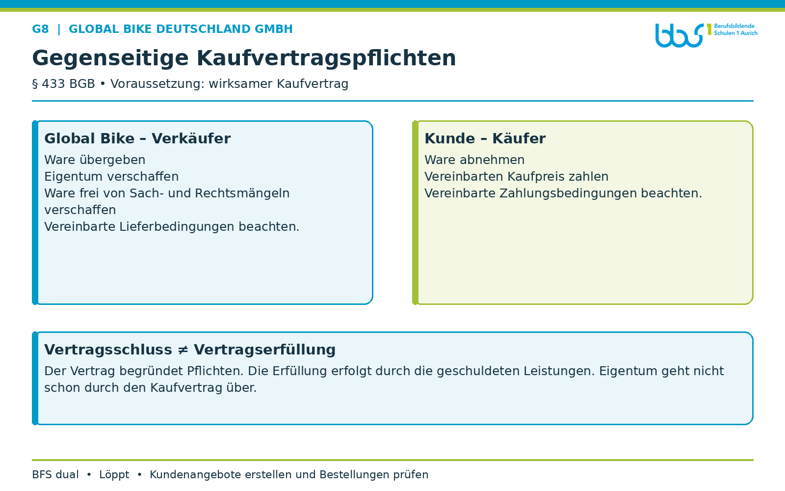

LS 2.4 · Global Bike
M8 – Pflichten aus dem Kaufvertrag
Global Bike Deutschland GmbH | Fachinformation | ab Phase 1 dauerhaft und bedarfsorientiert verfügbar
1. Worum geht es?
Wenn Global Bike und ein Händler einen wirksamen Kaufvertrag schließen, entstehen auf beiden Seiten verbindliche Pflichten. Die Auftragsbearbeitung muss wissen, welche Leistungen geschuldet werden und wann sie zu erbringen sind. Der Vertragsschluss bedeutet aber nicht, dass die Ware bereits geliefert, das Eigentum übertragen oder der Kaufpreis bezahlt wurde.
Alle folgenden Zubehörbeispiele sind eigenständige Unterrichtssimulationen ohne neue SAP-Stammdaten.
2. Wann entstehen die Pflichten?
Ein wirksamer Kaufvertrag entsteht grundsätzlich durch übereinstimmende wirksame Willenserklärungen (M3 und M7). Eine bloße Anfrage oder ein noch nicht angenommener Antrag begründet die kaufvertraglichen Hauptpflichten nicht. Vorvertragliche Pflichten können unabhängig davon bestehen, werden hier aber nicht vertieft.
Die Pflichten entstehen grundsätzlich mit dem Vertragsschluss. Wann sie fällig sind, richtet sich nach den vereinbarten Bedingungen und gesetzlichen Regeln.
3. Sämtliche Hauptpflichten nach § 433 BGB
| Verkäufer – Global Bike (§ 433 Abs. 1) | Käufer – Händler (§ 433 Abs. 2) |
|---|---|
| Ware übergeben | Vereinbarten Kaufpreis zahlen |
| Eigentum an der Ware verschaffen | Gekaufte Ware abnehmen |
| Ware frei von Sach- und Rechtsmängeln verschaffen | Vereinbarte Zahlungsbedingungen beachten (Konkretisierung der Zahlungspflicht) |
Liefer- und Zahlungsbedingungen konkretisieren die gesetzlichen Pflichten. Sie sind keine zusätzlichen eigenständigen Hauptpflichten aus dem Wortlaut des § 433 BGB.
4. Übergabe, Eigentum und Mangelfreiheit
Übergabe bedeutet vereinfacht, dem Käufer die tatsächliche Verfügung über die Ware zu ermöglichen. Besitz beschreibt die tatsächliche Sachherrschaft; Eigentum die rechtliche Herrschaft über eine Sache. Beides ist nicht dasselbe.
Eigentumsverschaffung bedeutet, dass der Käufer rechtlich Eigentümer wird. Bei beweglichen Sachen erfolgt die Eigentumsübertragung im Regelfall durch Einigung über den Eigentumsübergang und Übergabe (§ 929 Satz 1 BGB). Der Kaufvertrag allein überträgt kein Eigentum. Sonderfälle werden hier nicht vertieft.
Sachmängelfreiheit bedeutet vereinfacht, dass die Ware bei Gefahrübergang den maßgeblichen vereinbarten und gesetzlichen Anforderungen entspricht (§ 434 BGB). Rechtsmängelfreiheit bedeutet, dass Dritte keine Rechte gegen den Käufer geltend machen können, die dieser nicht nach dem Kaufvertrag übernommen hat (§ 435 BGB).
Mini-Fall A – Ware noch im Lager: Ein Händler und Global Bike schließen einen Kaufvertrag über Fahrradpumpen. Die Ware befindet sich noch im Lager in Hamburg. Der Händler hat einen Anspruch auf die geschuldete Leistung, ist aber nicht allein durch den Kaufvertrag Eigentümer geworden. Übergabe und Eigentumsverschaffung stehen noch aus.
Mini-Fall B – Beschaffenheit: Ein Händler kauft neue, funktionsfähige Fahrradklingeln. Bei der Übergabe sind einige Klingeln bereits beschädigt und nicht funktionsfähig. Die Ware entspricht insoweit nicht der vereinbarten Beschaffenheit. Die Pflicht zur sachmangelfreien Verschaffung ist nicht ordnungsgemäß erfüllt. Welche konkreten Mängelrechte daraus folgen, ist nicht Gegenstand dieser Lernsituation.
Mini-Fall C – Rechte Dritter: Bei einem fiktiven Verkauf von Transportzubehör besteht ein nicht übernommenes Recht eines Dritten, das dieser gegen den Käufer geltend machen kann. Hier ist die Rechtsmängelfreiheit betroffen. Ein äußerlich einwandfreier Artikel kann also dennoch einen Rechtsmangel aufweisen.
5. Pflichten des Käufers
Der Käufer muss den vereinbarten Kaufpreis zahlen und die gekaufte Ware abnehmen. Abnahme meint hier die Entgegennahme der Ware im Rahmen der geschuldeten Leistung, nicht eine werkvertragliche Abnahmeprüfung. Die Zahlung muss entsprechend den vereinbarten Bedingungen erfolgen.
Mini-Fall D – Abholung: Global Bike und ein Händler vereinbaren wirksam die Abholung von Fahrradpedalen zu einem bestimmten Termin in Hamburg. Global Bike stellt die vertragsgemäße Ware zur vereinbarten Übergabe bereit. Der Händler muss die Ware entsprechend der Vereinbarung abnehmen und den vereinbarten Kaufpreis zahlen. Die Abholung ist in diesem Beispiel Teil der konkreten Liefervereinbarung, nicht bei jedem Kauf vorgeschrieben.
6. Rechte und Pflichten gehören zusammen
| Anspruch | Entsprechende Pflicht |
|---|---|
| Käufer: vereinbarte Ware erhalten | Verkäufer: Ware übergeben |
| Käufer: Eigentum erwerben | Verkäufer: Eigentum verschaffen |
| Käufer: mangelfreie Ware erhalten | Verkäufer: sach- und rechtsmangelfrei verschaffen |
| Verkäufer: Kaufpreis erhalten | Käufer: vereinbarten Kaufpreis zahlen |
| Verkäufer: Abnahme verlangen | Käufer: gekaufte Ware abnehmen |
Schaubild G8: Gegenseitige Kaufvertragspflichten (in Moodle einbetten).
7. Vertragsschluss und Vertragserfüllung im zeitlichen Zusammenhang
Ein unabhängiger Beispielvorgang: Global Bike verkauft einem Händler Fahrradpumpen. Beide einigen sich wirksam auf Lieferung innerhalb einer Woche nach Vertragsschluss und Zahlung innerhalb von 21 Tagen ab Rechnungsdatum. Die Versandkosten trägt in diesem Beispiel Global Bike.
| Vorgang | Bedeutung |
|---|---|
| Wirksame Einigung | Vertragsschluss: gegenseitige Pflichten entstehen |
| Vorbereitung im Lager | Betriebliche Vorbereitung der Erfüllung |
| Vertragsgemäße Übergabe und Eigentumsübertragung | Verkäufer erfüllt die entsprechenden Pflichten |
| Entgegennahme | Käufer erfüllt seine Abnahmepflicht |
| Zahlung des vereinbarten Betrags | Käufer erfüllt seine Zahlungspflicht |
Diese Reihenfolge ist ein vereinfachtes Beispiel, keine zwingende gesetzliche Reihenfolge. Zahlung kann etwa auch vor der Lieferung vereinbart sein. Übergabe und Eigentumsübertragung können in Sonderfällen zeitlich auseinanderfallen. Erfüllung bedeutet, dass die jeweils geschuldete Leistung bewirkt wird; dadurch erlischt der entsprechende Anspruch grundsätzlich (§ 362 Abs. 1 BGB).
8. Bedeutung der vereinbarten Konditionen
Die Lieferfrist konkretisiert den Zeitpunkt der geschuldeten Lieferung. Die Versandkostenregel legt fest, wer die vereinbarten Kosten trägt. Das Zahlungsziel bestimmt, wann der Kaufpreis zu zahlen ist. Skonto ist ein bedingter Nachlass und keine Pflicht zur vorzeitigen Zahlung.
Beispiel: Bei einem unabhängigen Zubehörverkauf beträgt der Bruttorechnungsbetrag 238,00 EUR. Vereinbart sind 1 % Skonto innerhalb von fünf Tagen ab Rechnungsdatum, sonst 16 Tage ohne Abzug; rechtzeitiger Rechnungszugang wird vorausgesetzt. Bei fristgerechter Skontonutzung beträgt der Zahlbetrag 235,62 EUR. Ohne Skontonutzung sind 238,00 EUR innerhalb des Zahlungsziels zu zahlen. Die Zahlung des reduzierten Betrags erfüllt bei wirksamer Skontovereinbarung und Einhaltung der Bedingungen die Zahlungspflicht.
9. Handlungshilfe und typische Fehler
Für die fachliche Einordnung sind vier Fragen hilfreich: Besteht bereits ein wirksamer Vertrag? Welche Leistungen schuldet jede Seite? Wann und unter welchen Bedingungen sind sie zu erbringen? Welche Leistungen sind bereits erbracht und welche stehen noch aus?
| Fehlvorstellung | Fachlich richtig |
|---|---|
| Anfrage verpflichtet bereits zur Lieferung | Kaufvertragliche Hauptpflichten setzen einen wirksamen Vertrag voraus |
| Kaufvertrag überträgt sofort Eigentum | Eigentumsübertragung ist ein eigener rechtlicher Vorgang |
| Versandvorbereitung ist bereits vollständige Erfüllung | Die geschuldeten Leistungen müssen bewirkt werden |
| Unbeschädigte Ware ist immer mangelfrei | Auch vereinbarte Eigenschaften und Rechte Dritter sind relevant |
| Nur der Verkäufer hat Pflichten | Käufer schuldet Zahlung und Abnahme |
| Skonto muss genutzt werden | Skonto ist eine bedingte Möglichkeit |
| Jede Pflicht ist sofort fällig | Vereinbarungen und gesetzliche Regeln bestimmen die Fälligkeit |
Freiwillige Selbstkontrolle: Kann ich alle Hauptpflichten beider Seiten nennen? Kann ich Besitz und Eigentum unterscheiden? Kann ich erklären, warum Vertragsschluss und Erfüllung nicht dasselbe sind? Kann ich aus einer vereinbarten Liefer- oder Zahlungsbedingung die konkrete Pflicht ableiten?
Merke: Der Kaufvertrag begründet Pflichten. Die Vertragserfüllung verwirklicht sie. Übergabe, Eigentumsverschaffung, Mangelfreiheit, Abnahme und Zahlung sind jeweils fachlich zu unterscheiden.
Freiwillige Vertiefung: M9 und Ü7; Zusammenhang mit M3 und M7.
Gesetzesgrundlagen
§ 433 BGB, ergänzend § 434 BGB, § 435 BGB, § 929 BGB, § 362 BGB. Vereinfachte Darstellung; Leistungsstörungen, Mängelrechte und besondere Eigentumsübertragungsformen werden nicht vertieft.
